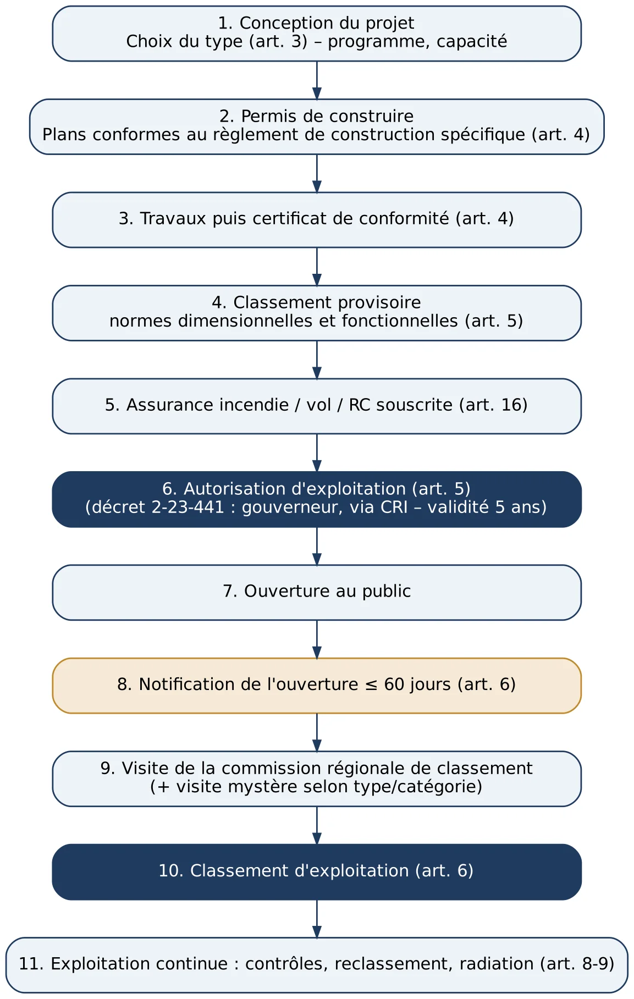
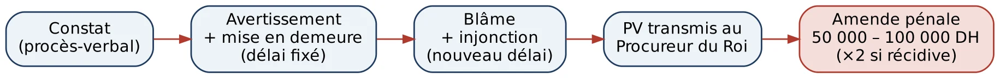
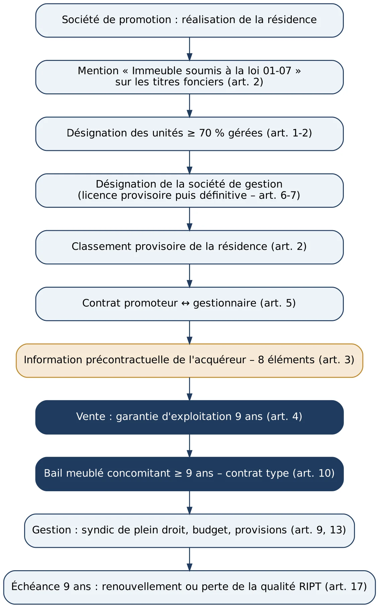
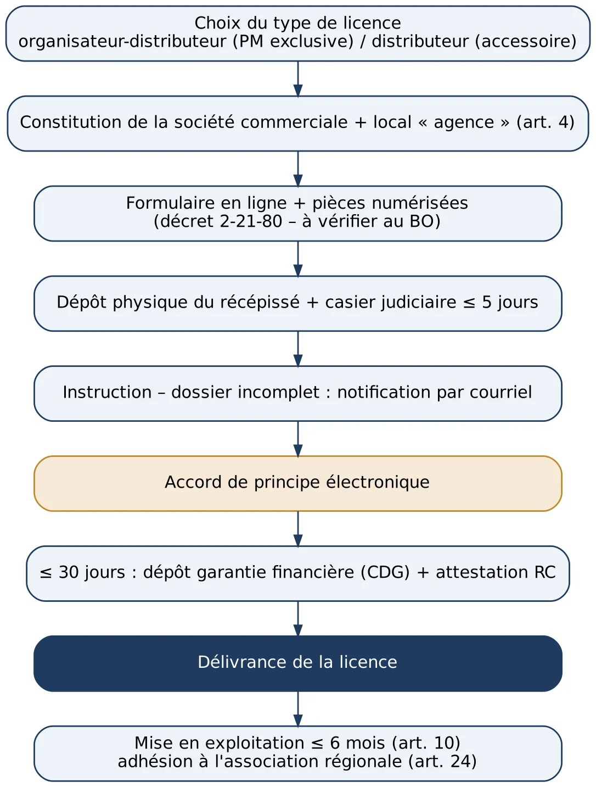
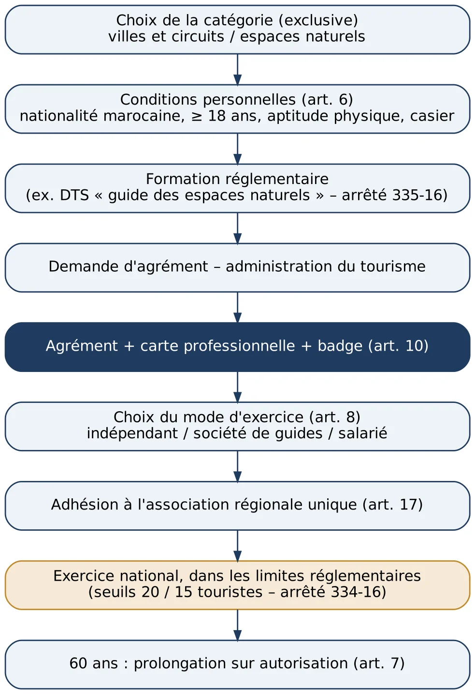
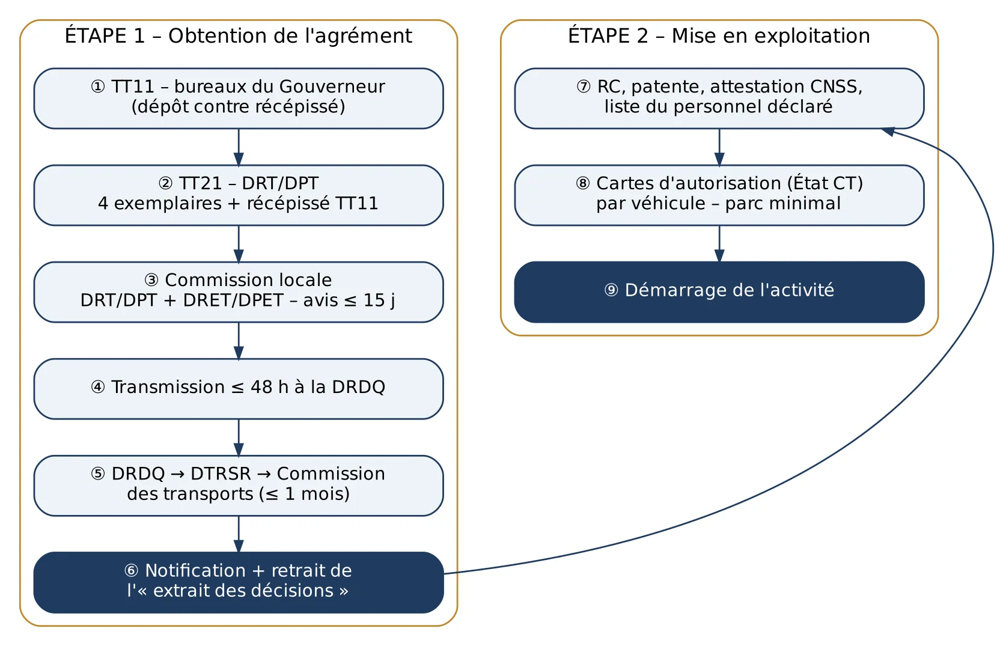
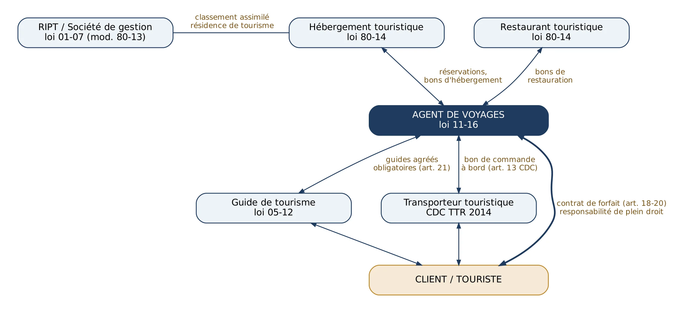

Cycle de vie d'un établissement d'hébergement touristique (loi 80-14).
Paragraphe lié : n° 1-040

Paragraphe lié : n° 1-040

Paragraphe lié : n° 1-091

Paragraphe lié : n° 1-101

Paragraphe lié : n° 1-180

Paragraphe lié : n° 1-230

Paragraphe lié : n° 1-290

Paragraphe lié : n° 1-310
